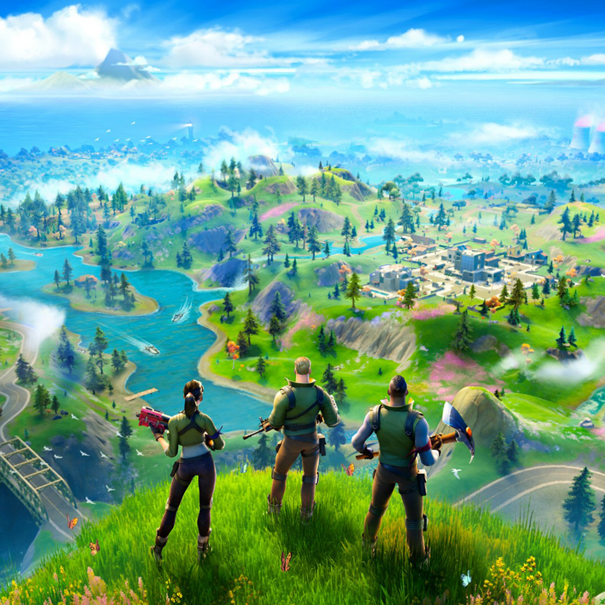

Welcome to Fortnite SMG! Brrr! Brrr!!!
Full-Screen
Best in Full-Screen
FORTNITE SMG
Statistics Map Generator
SMG is an application to generate 2D maps from Fortnite profile database.
Player Not Found
Generate Maps
Credit